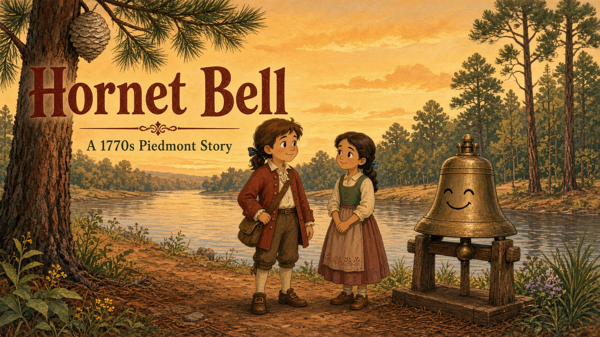

Ages 6–11 · militia cartoon
Hornet Bell
A militia educational cartoon from the North Carolina Piedmont. Wilson daughters, Davidson, Graham father and son, Polk, Brevard, Adlai Osborne, Reese, Knox, Caldwell — then Washington, Madison, Jackson, Cousin Polk, Lincoln’s books.
Bluey is the most-streamed title on earth. Cocomelon still earns on YouTube. We take short family episodes, not their characters. Liberty’s Kids is the history cousin. This show is original.
Cast
Episodes
Family record
Mary Wilson married Ezekiel Polk (President James Knox Polk’s line). Violet Wilson married Major John Davidson. Joseph Graham married their Isabella. Ephraim Brevard and Adlai Osborne, cousins, Princeton 1768. Gen. William Lee Davidson fell at Cowan’s Ford; the Rural Hill horse came home. In this family the Davidsons are one house, not two: the general is uncle to Major John and to Adlai Osborne.
The house they made
Col. Thomas Polk was tasked to escort Philadelphia’s bells — including the Liberty Bell — to Allentown, arriving 24 September 1777, so they would not be melted for cannon. His son William, later Lt. Col., served in that same North Carolina line (Germantown, Guilford, Cowan’s Ford, Eutaw).
Joseph Graham was first sheriff of Mecklenburg, N.C. senator, justice of the peace for decades, brigadier (1814) and major general of militia — not governor. His son William A. Graham was Governor of North Carolina (1845–49), U.S. Senator, Secretary of the Navy, and the 1852 Whig vice-presidential nominee. James Knox Polk sat in the White House from this same web. Local, bench, militia, state executive, president: one house. Open the live hall’s House tab for the full table.